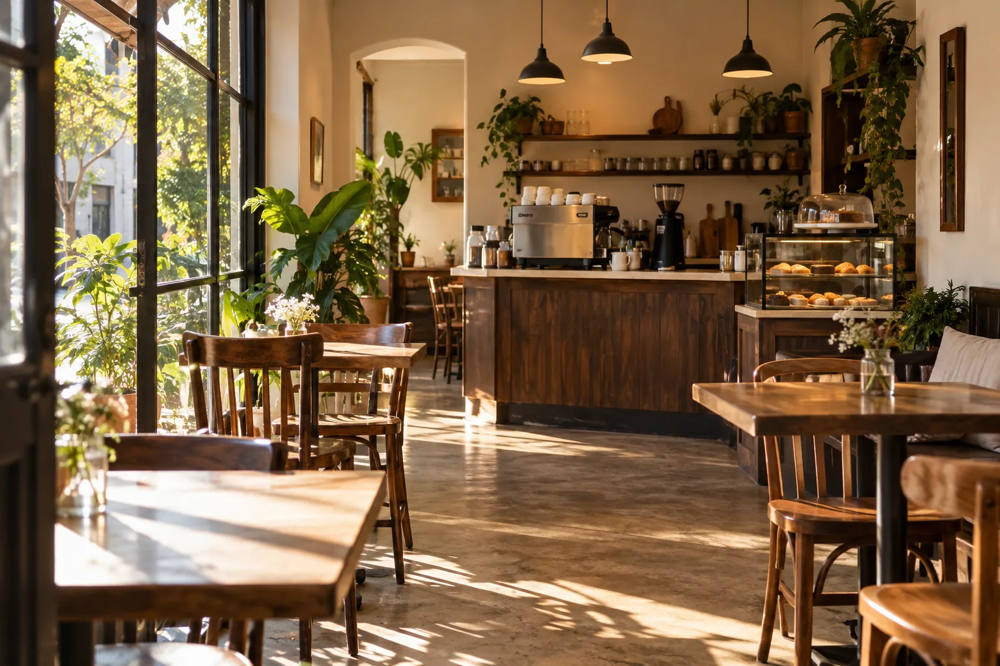

Sobre Nosotros
Rita Cafetería nació con la idea de crear un espacio tranquilo donde las personas puedan disfrutar de un buen café, productos artesanales y un momento de pausa.
Nuestro objetivo es ofrecer una experiencia simple y cuidada, combinando café de especialidad con panadería artesanal, opciones dulces y propuestas saladas.
Nuestra Filosofía
Creemos que un buen café no depende solamente de la bebida, sino también del ambiente, la atención y la calidad de los productos que lo acompañan.
Por eso buscamos trabajar con ingredientes seleccionados y preparaciones hechas con dedicación.
Qué ofrecemos
- Café de especialidad
- Bebidas calientes y frías
- Panadería artesanal
- Postres
- Opciones para desayuno y merienda
- Platos salados
Nuestro Espacio
Rita está pensado como un lugar cómodo para encontrarse, estudiar, trabajar o simplemente disfrutar de un café.
Queremos que cada persona que nos visite encuentre un ambiente cálido, relajado y agradable.
